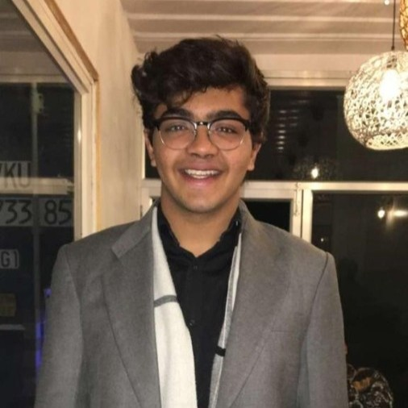

Aayush Jaiswal
MS in Data Science, Software Engineer, and AI/ML Researcher
I'm currently pursuing a Master of Science in Data Science at Indiana University Bloomington, with a passion for machine learning, mental health crisis prediction, and AI/ML research.
Previously, I completed a Bachelor of Technology in Computer Science from Manipal University Jaipur. My technical expertise spans Deep Learning, Data Engineering, MLOps, Computer Vision, and Recommendation Systems.
Education
- Master of Science in Data Science, Indiana University Bloomington (2022 - 2024), GPA: 3.60
- Bachelor of Technology in Computer Science, Manipal University Jaipur (2017 - 2021), GPA: 3.70